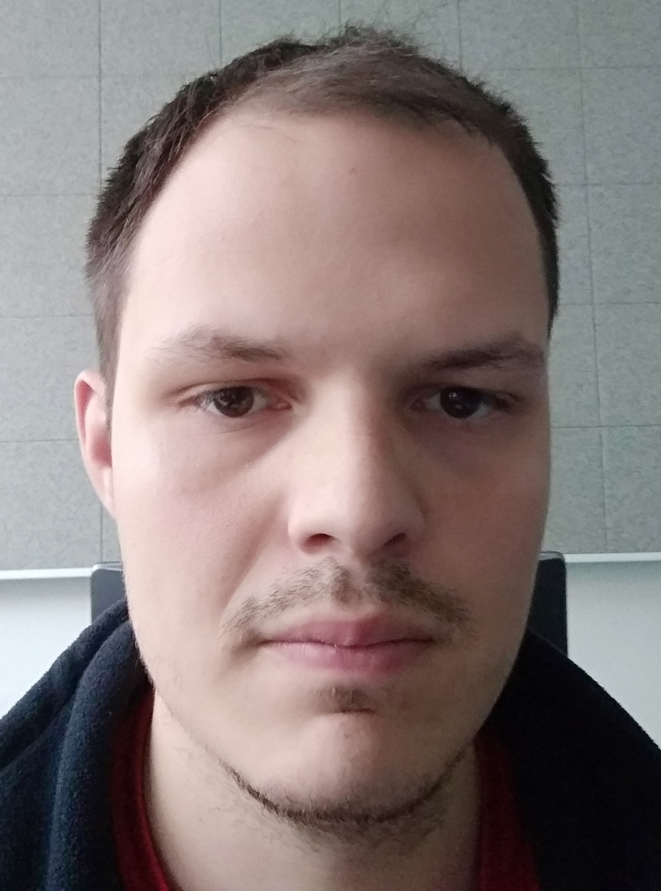

-
Osobní Informace
Jméno a příjmení: Jakub Kahound
Datum narození: 29.3.1986

-
Malé povídaní
Mám rád přírodu, Miluju tanec a pravidelně zpívám ve sboru VŠELIJAK. Můj velký sen je mít 100% home office
a cestovat po světe a pracovat s notebookem na internetu.